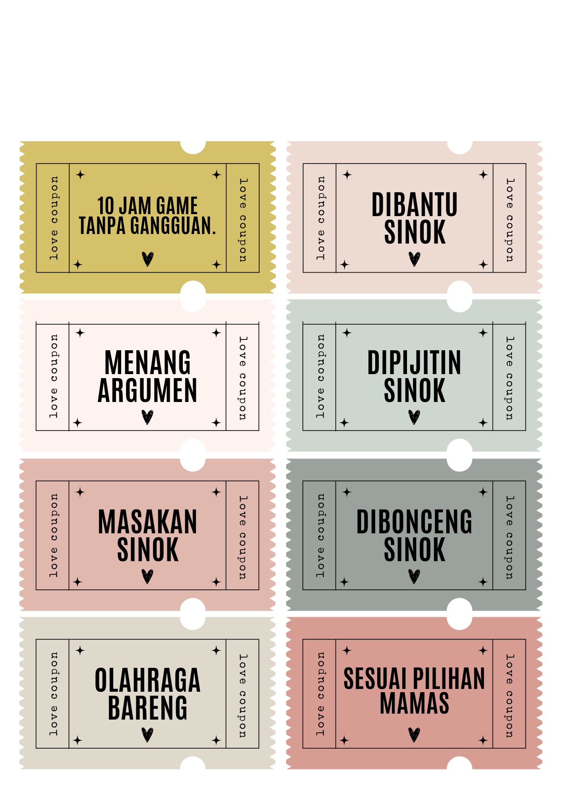
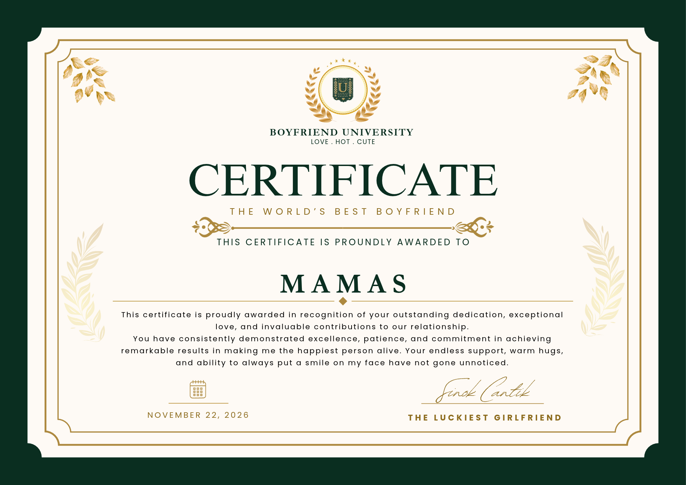

TAHAP 1
Tantangan
Tantangan akan tampil di sini.
Misi khusus untuk Mamas
Hai, Mamas. Sinok menyiapkan petualangan kecil untuk merayakan satu tahun perjalanan kita. Lewati tantangannya, temukan kembali kenangan kita, dan buka hadiah rahasia di ujung perjalanan.
Enam tahap • Tiga nyawa • Tantangan seru • Satu hadiah penuh cinta
Pesan kecil dari Sinok untuk teman seperjalanan terbaiknya.
Selesaikan tantangan untuk membuka tahap berikutnya.
Kalau gagal dalam tantangan, satu nyawa berkurang. Jika nyawa habis, Mamas harus menjawab kuis kenangan tentang kita untuk mendapatkan tiga nyawa baru. 💗
Tantangan akan tampil di sini.
Berawal dari obrolan sederhana, sekarang kita punya banyak cerita untuk disimpan.
Terima kasih sudah menerima Sinok, mendengarkan cerita Sinok, dan tetap berusaha menjadi lebih baik bersama. Semoga Allah menjaga langkah kita, melapangkan rezeki, mengizinkan kita ke Makkah dan Madinah, dan menuntun kita menuju masa depan yang kita doakan. ❤️
Dengan sayang, Sinok ♡
Video kenangan Sinok dan Mamas.
Jika video belum bisa diputar, periksa file kebersamaan.mp4 di GitHub.
Hadiah kecil yang dibuat khusus untuk Mamas.

Nomor kupon: 22-11-SINOK-MAMAS
Berlaku selama kita saling menyayangi dan menjaga. ✨
Karena Mamas punya tempat istimewa di hati Sinok.

Sertifikat penghargaan cinta dari Sinok untuk Mamas · 22 November 2026